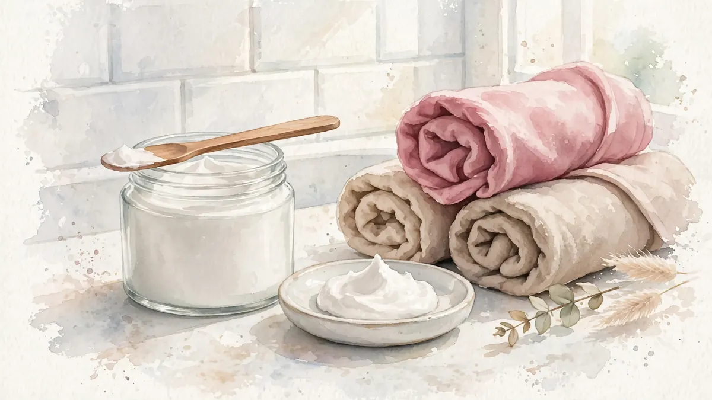
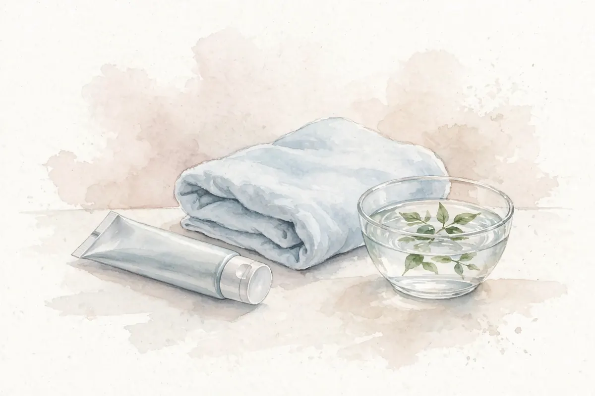
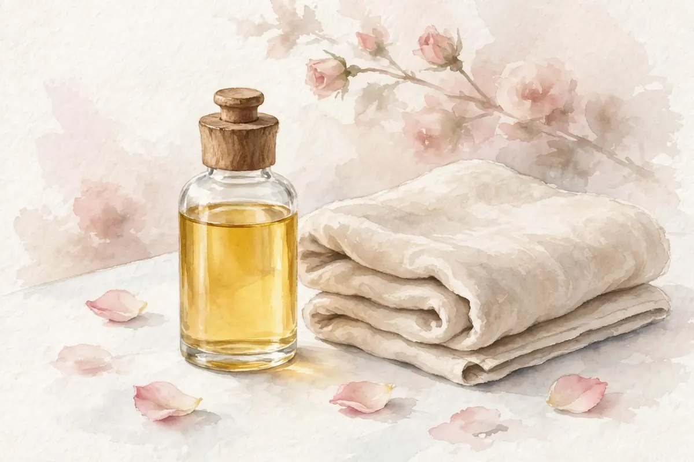

ボディケアは、このサイトの中心カテゴリです。施術の現場では、部位によって乾燥しやすい場所や、クリームやオイルの適量が変わることを日々実感します。その実務の視点を、アイテム選びと使い方の工夫として紹介します。

部位で変える、ボディクリームの塗る量の目安
脚・腕・背中など、部位の面積で量を考える方法と、塗るタイミングの工夫を、施術の現場から紹介します。
記事を読む

かかと・ひじ・ひざのパーツ別ケア
硬く感じやすい部位の塗り方の工夫と、パーツごとにアイテムを使い分ける考え方です。
記事を読む

入浴後の塗るタイミングと順番
身体を拭く前か後か、部位の順番の決め方など、流れの作り方を紹介します。
記事を読む

香りつき／無香料の選び分け
使う場面と時間帯で香りの有無を選ぶ考え方を整理しました。
記事を読む

容器で変わる使い勝手（ポンプ・チューブ・ジャー）
容器の形ごとに変わる、量の取りやすさと衛生面の見方をまとめました。
記事を読む

衣類につきにくい塗り方と着替えのタイミング
塗ってから着替えるまでの待ち方と、量と伸ばし方の工夫をまとめました。
記事を読む

首・デコルテまで伸ばす塗り方
顔のケアの流れで首元まで範囲を広げる手順と、力加減、衣類との境目の配慮です。
記事を読む

足裏・足指のケアと靴下のタイミング
動かない時間に塗る設計、足指の間まで分けて塗る方法、靴下のタイミングです。
記事を読む

入浴剤の種類と表示の読み方
形状と区分表示の分け方、湯量あたりの使用量、浴槽への注意表示の読み方です。
記事を読む

スクラブ系アイテムの頻度と部位の考え方
頻度は表示の案内が基準。部位の区分と、カレンダーで間隔を管理する方法です。
記事を読む

オイルとクリームの使い分け
広がり方と残り方の違い、場面と部位での役割分担、重ねる順番を整理しました。
記事を読む

朝のボディケア：着替え前の時短ルーティン
出ている部位に絞る範囲の決め方と、動線に道具を置く時短の工夫です。
記事を読む
仕事終わりの脚・腰まわりのセルフケア
帰宅後の流れに組み込むタイミングと、手のひらで触れて確かめる手順です。
記事を読む
プレゼントで贈るボディケアの選び方
香りは控えめを基準に、使い切りやすいサイズと期限の確認という配慮です。
記事を読む

家族でシェアする時の容器選びと衛生面
ポンプ・チューブの分けやすさ、ジャーはスパチュラで取る運用の工夫です。
記事を読む

旅行先でのボディケアの量と携帯容器
部位の単位×泊数の計算と、漏れにくい携帯容器の選び方、現地での保管です。
記事を読む

肩・首まわりのセルフケアの組み立て
手の届く範囲での触れ方と温め方、姉妹サイトのストレッチ資料への案内つきです。
記事を読む
冬のブーツの日：足のケアと靴下選び
ブーツを履く日の蒸れ対策、帰宅後の足のケアと靴下の素材・厚みの選び方です。
記事を読む

手洗いが多い日のハンドケアの回数と量
手洗いの回数が多い日の、塗るタイミングと1回量の決め方です。
記事を読む

浴室・洗面所での保管場所の工夫
湯気と水はねを避ける置き場所の決め方と、容器の外側の手入れです。
記事を読む

週末にまとめてするボディケアの計画
平日にしない部位を週末に回す計画の立て方と、時間の配分です。
記事を読む

爪まわり・指先のケアの組み立て
入浴後のタイミングと道具の手入れから、指先ケアの段取りを整理します。
記事を読む

制汗・デオドラント系アイテムの表示の見方
医薬部外品の有効成分表示と、形状ごとの使い方の案内の読み方です。
記事を読む

体の日焼け止め：塗る範囲と量の目安
手のひら単位の量の数え方と、塗り忘れやすい場所、塗り直しの決め方です。
記事を読む

ボディタオル・スポンジの手入れと交換時期
洗って乾かす手入れの基本と、交換を考える状態のサインを整理します。
記事を読む

体を洗う順番の組み立て方
上から下へ進める基本の型と、洗い残しやすい場所の組み込み方です。
記事を読む

入浴のお湯の温度と時間の目安
温度と時間をセットで考える目安の作り方と、家族で共有する工夫です。
記事を読む

ストレッチと組み合わせる夜のボディケア
入浴後に塗って伸ばす順番の組み立て。姉妹サイトへの案内つきです。
記事を読む
職場のデスクに置くハンド・ボディケア
小さい・倒れない・香り穏やか。デスクに置くケアの選び方と置き方です。
記事を読む

アウトドアの日の携帯ボディケア
場面から逆算して絞る持ち物と、漏れ対策、帰宅後の段取りです。
記事を読む
プレゼントでもらったボディケアの確認点
開封前に表示を読み、少量から始める。もらったアイテムの確認点です。
記事を読む

寝る前のケアと寝具につきにくい工夫
支度をはさむタイミングと、薄く2回の量の調整で付きにくくします。
記事を読む

朝シャワーの日のボディケアの段取り
朝は流す、夜は整える。短縮版の型で回す朝の段取りです。
記事を読む

雨の日・湿気の多い日の足まわりケア
濡れた足と靴を乾かす段取りと、靴のローテーションの作り方です。
記事を読む
冷房の効いた室内でのボディケアの工夫
風の当たる部位を押さえ、塗り直しを出来事と結びつける工夫です。
記事を読む

手袋をする日のハンドケアの組み合わせ
塗って、なじませて、はめる。手袋の日は順番と量の基準が鍵です。
記事を読む

入浴剤のタイプ別表示：粉末・液体・発泡の読み方
粉末・液体・発泡の違いと、1回分の目安や注意表示の読み方を整理します。
記事を読む

ボディソープと石けん、表示の違いの読み方
固形だから石けん、とは限らない。表示の分類と使い分けの目安です。
記事を読む
汗拭きシートの使い方と注意表示：拭く順番と肌への気づかい
汗拭きシートは上から下へ、こすらず軽く。注意表示の読み方と持ち運びの工夫を整理します。
記事を読む

冷感タイプの表示の読み方：ひんやり感の書き方と使い方
「ひんやり感」は使用感の欄に書かれている。量と範囲、注意書きから読む冷感タイプの使い方。
記事を読む

温感タイプのボディケア：表示の読み方と使う場面の考え方
温かさの感じ方の案内と、量・範囲の目安。使う場面と避けたい場面の表示を整理します。
記事を読む

ひじ・ひざ・かかとのケア：部位で変える量の目安
ひじ・ひざ・かかとは、同じクリームでも量が違う。部位別の量の目安と塗るタイミングを整理します。
記事を読む

足裏シート・角質ケアパックの注意表示
足裏シートと角質ケアパック、表示のどこを見る？ 使用時間・頻度・保管の確認点を整理します。
記事を読む

マッサージオイルの量とすべりの目安：施術の現場から
量は部位の面積で決める。手のすべりで判断する現場の目安と、使ったあとの段取りを整理します。
記事を読む